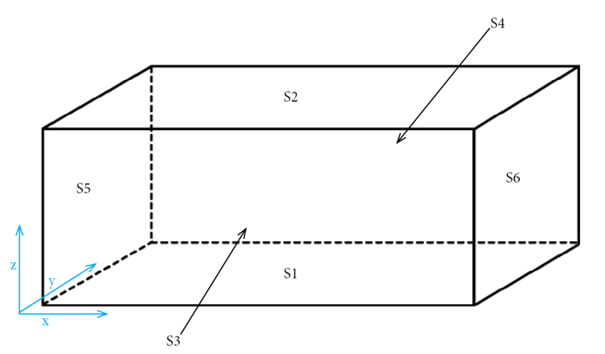

Diffusion Equation Finite Different Method (FDM) documentation
The software is based on the Du Fort and Frankel method (explicit unconditionally stable Finite difference method) solving the diffusion equation (Navarro et al., 2012).
Theory of Diffusion Equation model
The model for the sound energy density \(w(\mathbf{r}, t)\) at position \(\mathbf{r} = [x,y,z]\) and at time \(t\) on a domain \(V\) is based on the following partial differential equation:
where \(\frac{\partial^2}{\partial x^2}\), \(\frac{\partial^2}{\partial y^2}\), \(\frac{\partial^2}{\partial z^2}\) are the Laplace operators and \(D = \frac{\lambda c}{3}\) is the so-called theoretical diffusion coefficient with \(c\) being the speed of sound. The diffusion coefficient is a constant value that takes into account the room geometry and volume trough the mean free path defined for proportionate rooms as \(\lambda = \frac{4 V}{S}\) with volume \(V\) of the room and \(S\) the total surface area. The term \(P(t)\) indicates a sound source term at position \(r_s\). The term \(c m w(\mathbf{r}, t)\) accounts for the atmospheric attenuation within the room, where \(m\) is the absorption coefficient of air (Billon et al., 2008).
The main partial differential equation is associated with mixed boundary conditions on a domain \(\partial V\), as follows:
This models the effect of the absorption at the surfaces in the sound field. The term \(n\) indicates the vector normal to the surface and the term \(A_{r}\) is dependent on the absorption coefficient \(\alpha\). Depending on the scope and on the absorption coefficient to use, the absorption term \(A_{r}\) is defined differently. There are three different absorption factors \(A_{r}\): the Sabine (Picaut at al., 1999; Valeau at al., 2006), the Eyring (Jing et al., 2007; Billon et al., 2008) and the modified by Xiang (Jing et al., 2008).
Finite Different Scheme
Diffusion Equation
The software is implemented using the explicit unconditionally stable numerical Finite Different Method called Du Fort and Frankel to solve the diffusion equation (Navarro et al., 2012). The Dufort and Frankel method is an expansion of the Forward-Time-Centere-space (FTCS) method with a truncation order of \(O[\Delta t^2] + O[\Delta v^2] + O[\Delta t^2 x \Delta v^2]\). It is an explicit and unconditionally stable method with \(\Delta t\) as time step discretization and \(\Delta v=\Delta x=\Delta y=\Delta z\) as spatial discretization. The \(\Delta v\) and \(\Delta t\) are to define depending on the room in order for the results to converge to the exact one (Navarro et al. 2012). Generally a \(\Delta v < 0.5\) and \( \Delta t > 1/32000\) is sufficient, but it depends on the dimensions of the room and the precision to obtain. The smaller the two values the more accurate the calculation will be however, with an increase in computational time.
According to the Dufort and Frankel method, the discretization is based on the following:
\(i\) is the spatial element along \(x\) direction;
\(j\) is the spatial element along \(y\) direction;
\(k\) is the spatial element along \(z\) direction;
\(n\) is the temporal element.
with the following surface definition:

The full discretised partial differential equation is:
w_{i,j,k}^{n+1} = \frac{1}{1+ \beta_{0}} \Big(
(w_{i,j,k}^{n-1} (1- \beta_{0}) - 2\Delta t \, c_{l} \, w_{i,j,k}^{n} - 2 \Delta t \, P_{i_s,j_s,k_s}^{n}) \\
+ \beta_{0x}(w_{i+1,j,k}^{n} + w_{i-1,j,k}^{n})
+ \beta_{0y}(w_{i,j+1,k}^{n} + w_{i,j-1,k}^{n})
+ \beta_{0z}(w_{i,j,k+1}^{n} + w_{i,j,k-1}^{n})
\Big)
Where:
And
Each term of the equation is discretized as follows:
This is a soft source term at position \(i_{s},j_{s},k_{s}\) and at the time step of \(n\). According to Navarro et al. 2012, the source term function is: \(w_{i_s,j_s,k_s}^{n+1}= w_{i_s,j_s,k_s}^{n+1}+2 \Delta t P_{i_s,j_s,k_s}^n\)
The stability criterion is the following (Navarro et al., 2012):
Where \(\beta_{0}\) is a term of constants in the discretization of the diffusion equation defined above.
Boundary Conditions
Additional equations are needed to describe the sound field at the boundaries. The discretized equations are based on the forward and backward three points formula (Necati et al., 2017). Only the one directional formulas have been included as examples.
Forward Difference Approximation (first derivative - three points formula) for \(x=0\), any \(j\) and any \(k\).
Backward Difference Approximation (first derivative - three points formula) for \(x=L_{x}\), any \(j\) and any \(k\).
And the discretized boundary reshaped are:
1.1. Forward Difference Approximation for \(x=0\), any \(j\) and any \(k\)
2.1. Backward Difference Approximation for \(x=L_{x}\), any \(j\) and any \(k\)
References
J. M. Navarro, J. Escolano and J. J. Lopez, Implementation and evaluation of a diffusion equa-tion model based on finite difference schemes for sound field prediction in rooms, Applied Acoustics 73 (2012), 659–665.
Billon A, Picaut J, Foy C, Valeau V, Sakout A. Introducing atmospheric attenuation within a diffusion model for room-acoustic predictions. Journal of the Acoustical Society America 2008 Jun; 123(6):4040-3.
Picaut, J., L. Simon, and J. D. Polack. 1997. “A Mathematical Model of Diffuse Sound Field Based on a Diffusion Equation.” Acta Acustica United with Acustica 83 (4): 614–621.
Valeau, V., J. Picaut, and M. Hodgson. 2006. “On the Use of a Diffusion Equation for Room-Acoustic Prediction.” Journal of the Acoustical Society of America 119 (3): 1504–1513.
Jing, Y., and N. Xiang. 2007. “A Modified Diffusion Equation for Room-Acoustic Predication (L).” Journal of the Acoustical Society of America 121 (6): 3284–3287.
Billon, A., J. Picaut, and A. Sakout. 2008. “Prediction of the Reverberation Time in High Absorbent Room Using a Modified-Diffusion Model.” Applied Acoustics 69 (1): 68–74.
Jing, Y., and N. Xiang. 2008. “On Boundary Conditions for the Diffusion Equation in Room Acoustic Predictions: Theory, Simulations, and Experiments.” Journal of the Acoustical Society of America 123 (1): 145–153.